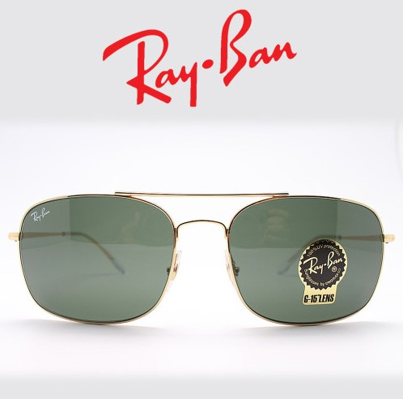

RayBan 레이밴 보잉선글라스 RB3611
수 많은 안경 / 선글라스 프레임을 샀다 팔았다 하면서 깨달은건
안경테는 안경테 선글은 선글이라는 것입니다 ㅋㅋㅋ
제가 오버사이즈를 좋아해서 더 그런 것일 수도 있는데
선글라스 프레임을 안경으로 쓰고싶어서 매장에 들려 렌즈제거하고 프레임만 써 보면 제가 생각했던 거랑 다른 경우가 대부분 이었어요;;;
근데 그걸 아는 인간이 지치지도 않고 또다시;;;
유태오 배우가 사용한다는 요 모델을 보구 호기심에(....) 주문해봤습니다;
주문전에 젠몬 부기랑 스타일 겹치는거 아닌가? 싶었는데
젠몬 부기는 세로로 길고 실버먼 얜 가로로 긴 골드 색상이잖아 - 라는 합리화(....)를 거쳐 ㅋㅋㅋㅋㅋ
지른 후 안경렌즈로 교체했습니다. 약 일주일 기다린 후 받아봤는데 오 이건 괜춘해요!!!
선글라스 프레임에 렌즈가로 사이즈도 큰편이고 (60mm / 보통 나에게 어울리는건 52-54mm)
보잉 스타일이 잘 어울리는 편도 아니구
예전에 레이밴 제품 한번 구매했다 대박 망한적이 있어서 바로 벼룩행을 했었는데
이 모든 리스크와 삽질의 기억이 있는데 지치지도 않고 또 구매해봤습니다 ㅋㅋㅋㅋㅋㅋㅋㅋㅋㅋ
근데 요번 구매는 성공해서 기쁘다는 이야기 ㅋㅋㅋ
요것도 엄청 가볍네용
그나저나 추운날씨 + 마스크로 안경 김서리는거 넘 힘들어요 ㅜㅜ
겨울을 좋아하지만 이번만큼은 빨리 지나갔으면 좋겠네요 ㅜㅜ